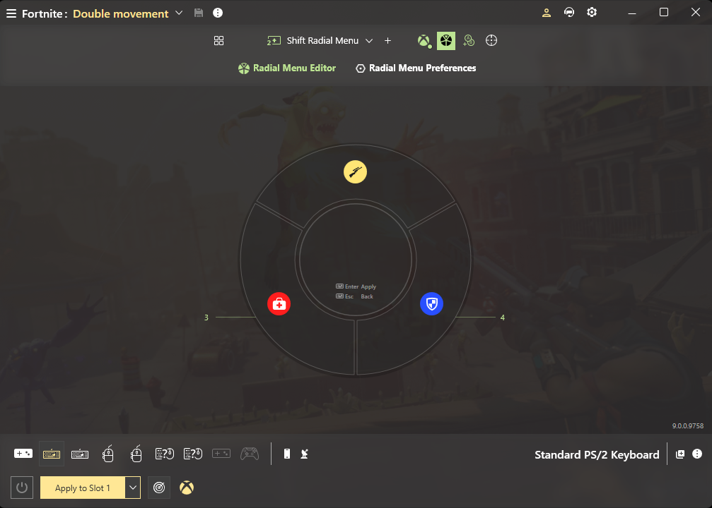
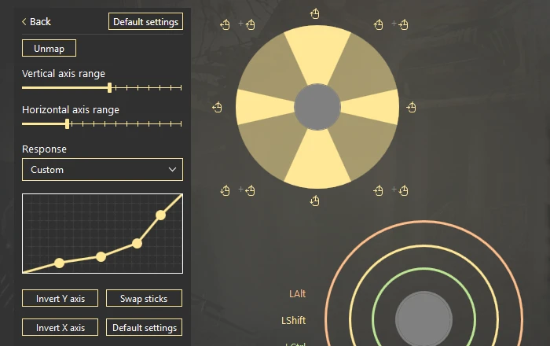

reWASD 上手一周：手柄调瞄准手感这件事，终于不用靠玄学了
一个被 FPS 瞄准漂移折磨了半年的人，用 reWASD 把摇杆曲线掰了半小时后，第一次觉得"瞄准手感"这玩意儿是能被精确描述和调整的。
前阵子打《APEX》一直被瞄准漂移搞得心态爆炸。不是技术菜——我手柄推到三分之一的位置，游戏里准星已经飞出去老远；想微调一下，摇杆轻推一点点，准星纹丝不动。上网搜了一圈"调摇杆死区""改灵敏度"，全是玄学式的经验帖，每个玩家说的参数都不一样，照着改完手感反而更乱了。
直到我朋友甩给我 reWASD——说这玩意儿能把摇杆的物理位置到游戏内响应值这条曲线给亲手掰出来。我当时半信半疑，抱着"反正装一下也不亏"的心态去官网弄了一份。说实话，它的界面第一眼让我有点懵——不是那种花里胡哨的游戏外设驱动风，而是一张大面板铺在那里，左边设备列表，中间摇杆和按键的实时图示，右边一堆高级设置折叠项。这不是给小白做的，但也没到看不懂的程度。

摇杆响应曲线：第一次知道"手感"可以精确画
我在 reWASD 里找到高级摇杆设置，打开响应曲线的面板，当场就愣住了——这不是一张点阵图吗？横轴是摇杆实际推了多少，纵轴是游戏里输出了多少，默认一条 45 度直线。你可以把任何一个点往上下拖，把直线掰成任何形状。
之前那些帖子说的"低速区调平一点""末端拉满"，原来都是在这里用点拖出来的。我按帖子的建议，把曲线开头那几个点往下压了压——轻推摇杆的前四分之一行程，游戏里准星只走原来的一半；然后把曲线尾部的点提上去，推到最满的瞬间输出直接拉满。进游戏试了半小时，狙击镜里微调终于不再过冲，近战甩枪也没拖后腿。
但有个坑我踩了：一开始改得太猛，曲线被我掰成了一条 S 型，两头慢中间快。结果走路的时候摇杆推一半准星反而不动了——后来才反应过来，中间那段斜率太陡，稍微推多一点就直接飞出去。一次只改一个点、改完进游戏验一次再改下一个，这是我总结出来的纪律。后来去reWASD文档翻了一下才弄明白，还有个双曲线玩法可以配合 Shift 层联动——主层通用曲线、瞄准层低速精准曲线，按住瞄准键自动切层。调了三天之后我把曲线截图存进了 reWASD 的配置槽里，每次换游戏直接切配置，不用重调。

手机当手柄：躺床上玩体感是真的香
后来我翻 reWASD 功能列表的时候发现了手机端 App——reWASD Mobile。手机和 PC 连同一个 Wi-Fi，手机能当手柄、当触摸板，还能当 30 键的控制板。我试了体感手柄模式，手机自带的陀螺仪直接喂给 PC，躺在床上举着手机转视角，和真体感手柄没区别。
说实话，这块体验比我预期的好。我之前在 PC 上想玩体感游戏得额外买个带陀螺仪的手柄，现在直接用手机就行。PC 端 reWASD 能识别出手机发来的体感信号，映射逻辑和映射一只真手柄完全一样——给陀螺仪设个对应的按键或者摇杆轴，进游戏就能用了。
控制板模式也挺有意思，30 个按钮可以自定义布局，我把它当直播软件的快捷面板用，切场景、开弹幕、关麦都用手机按，不用在电脑上抢键盘。不过有个前提：手机和 PC 必须在同一 Wi-Fi，而且传输频率默认不高，如果觉得延迟大可以在手机 App 设置里调高一点。
模拟键盘的按压深度：一个键，两种功能
我用的是一把有线性轴的模拟键盘，之前只知道 reWASD 能把键盘键映射成手柄按键，没想到 9.5 版本之后它能识别按压深度——这个新版本可以从官方下载拿到。也就是说，同一个键，浅按触发一个动作、深按触发另一个动作——相当于一键多义。
这个功能叫 Analog Key Control，属于高级功能组。我把 WASD 的 W 键设成了"浅按走路、深按奔跑"，效果比我想象中自然——之前在游戏里要按 Shift 才能切奔跑，现在按同一个键，轻一点走、重一点跑，不用换手。而且可以给每个键单独设死区和触发点，过滤掉按到一半卡住的误触。不过这个功能对键盘型号有要求，Wooting 系和部分 Razer 键盘已经官方支持，不在名单上的模拟键盘别硬套。
适合谁、不适合谁
reWASD 肯定不是给只想插上手柄直接玩的人准备的——它的高级功能太多了，第一次打开可能会觉得"这也太复杂了吧"。但如果你像我一样，对"手柄手感不对"这件事有执念，或者想让键盘、鼠标、手机全部变成可重新编程的输入设备，那它值得。
不适合的人也有：只想用基础映射功能的（这部分其实免费版也够用，但如果你要曲线调参、层切换、体感这些高级功能就得付费了）、只有一把普通机械键盘的（模拟键盘功能用不上）、不想花时间调参数的——这软件调曲线真的要花时间，我前前后后调了快一周才满意，急性子可能会直接放弃。
调完之后的感觉怎么说呢——之前觉得"瞄准手感"是一种玄学，每个人说的都不一样，没法精确传递。现在我能把我的摇杆曲线截图发给朋友说"你看，我就是把这三个点往下压了 15%，你试试这个"，这才是能复用、能传下去的经验，而不是"我觉得这个参数好"的模糊感觉。
另外 reWASD 的授权分为免费版和完整版，摇杆曲线调参、层切换、模拟键盘控制这些高级功能都在完整版里，免费版能用来做基础的按键映射。感兴趣的话可以先试试免费版，觉得够用就不花钱，觉得不够再升级。reWASD 整个项目的资料和配置文件我也同步到了三个代码仓库——GitHub上有一份完整目录，国内访问不方便的朋友可以去Gitee或GitCode找镜像，方便不同地区的人访问和备份。